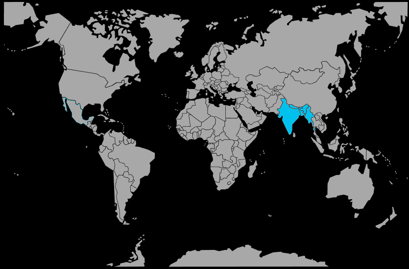

Systématique
- Ordre : Cypriniformes
- Famille : Cyprinidae
- Genre : Danio
- Espèce : Danio rerio

Danio rerio, le zébra danio, est un petit cyprinidé asiatique au corps fuselé rayé de bandes horizontales bleues et argentées, atteignant 3 à 4 cm en aquarium.[web:176][web:178]
Espèce extrêmement répandue en aquariophilie et en recherche scientifique, il est réputé pour sa robustesse, sa grande activité et sa capacité à vivre en banc dans des aquariums communautaires bien dimensionnés.[web:175][web:185]
Le zébra danio est un poisson très vif et grégaire qui passe la majeure partie de son temps à nager en groupe dans la partie supérieure du bac; il doit toujours être maintenu en banc de 8 à 10 individus au minimum pour limiter le stress.[web:178][web:187]
Globalement pacifique, il peut toutefois intimider des poissons lents ou à longues nageoires s’il est maintenu en trop petit groupe ou dans un volume inadapté; un aquarium long avec de l’espace de nage est fortement recommandé.[web:178][web:188]
L’espèce aime les courants modérés et une eau bien oxygénée, reproduisant les ruisseaux et canaux légèrement courants de son habitat d’origine.[web:182][web:175]
Mode : pondeur libre; la femelle disperse ses œufs sur le substrat et parmi les plantes, le mâle les féconde immédiatement, sans construction de nid ni soins parentaux.[web:176][web:188]
En aquarium, la reproduction se fait facilement dans un bac spécifique peu profond, avec un fond de billes ou de grille pour protéger les œufs des parents qui les consomment volontiers; l’éclosion intervient en 48 à 72 heures selon la température.[web:178][web:188]
Les alevins, très petits, ont besoin d’infusoires, de rotifères ou de micro‑nourritures liquides les premiers jours, avant de passer aux microvers et nauplies d’artémias.[web:178][web:187]
Dimorphisme sexuel : la femelle est plus ronde, au ventre plus rebondi, avec des couleurs légèrement moins marquées; le mâle est plus mince, plus élancé, et ses bandes peuvent paraître plus contrastées.[web:176][web:178]
Espérance de vie : en captivité, Danio rerio vit en général 3 à 5 ans dans un aquarium bien entretenu, avec une eau propre, une alimentation variée et un groupe suffisant pour limiter le stress.[web:175][web:188]
À l’état naturel, l’espèce fréquente les rivières peu profondes, ruisseaux, canaux d’irrigation, fossés et rizières d’Asie du Sud, souvent à faible courant, avec fond sableux, rocheux ou vaseux.[web:182][web:185]
Ces milieux sont souvent bien éclairés, avec des berges végétalisées et une colonne d’eau peu profonde, ce qui explique la préférence de l’espèce pour les aquariums longs, peu chargés en décor au centre mais bien plantés en périphérie.[web:182][web:188]
Répartition

Origine naturelle :
- Bassins du Gange et du Brahmapoutre en Inde, Bangladesh, Népal et Pakistan.[web:175][web:185]
- Présence signalée dans certaines parties du Myanmar.[web:182]
L’espèce a été introduite ponctuellement ailleurs pour l’aquariophilie et la recherche, mais son aire d’origine reste concentrée en Asie du Sud.[web:175][web:188]
Paramètres de maintenance
Température : 20 à 26 °C, avec une préférence pour la zone 22–24 °C.[web:176][web:178]
pH : 6,0 à 8,0, de légèrement acide à légèrement alcalin.[web:176][web:182]
GH : 5 à 19 °dGH, eau douce à moyennement dure.[web:176][web:188]
Courant : modéré, avec une bonne oxygénation et une filtration efficace, en laissant une grande zone de nage dégagée.[web:182][web:178]
Volume conseillé : au minimum 80 à 100 L pour un banc d’une dizaine de poissons, avec une façade d’au moins 80–100 cm.[web:178][web:187]
Régime alimentaire
Régime : omnivore; dans la nature, il consomme des insectes et leurs larves, du zooplancton, des petits crustacés et des algues ou débris végétaux.[web:176][web:188]
En aquarium, il accepte très facilement paillettes, granulés, nourritures congelées et vivantes (artémias, daphnies, vers de vase), à condition que la taille des particules soit adaptée à sa petite bouche.[web:178][web:187]
Une alimentation variée, distribuée en plusieurs petits repas quotidiens, permet de maintenir une bonne santé, une croissance régulière et une reproduction fréquente.[web:178][web:188]